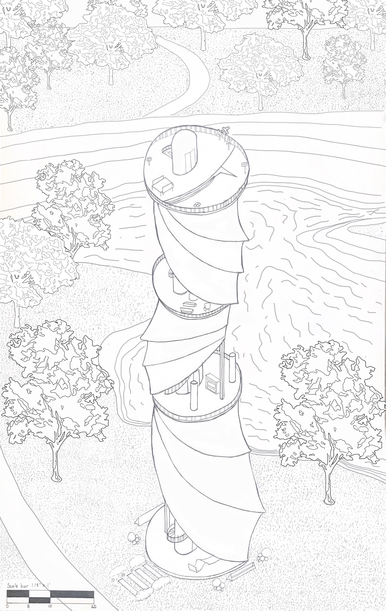
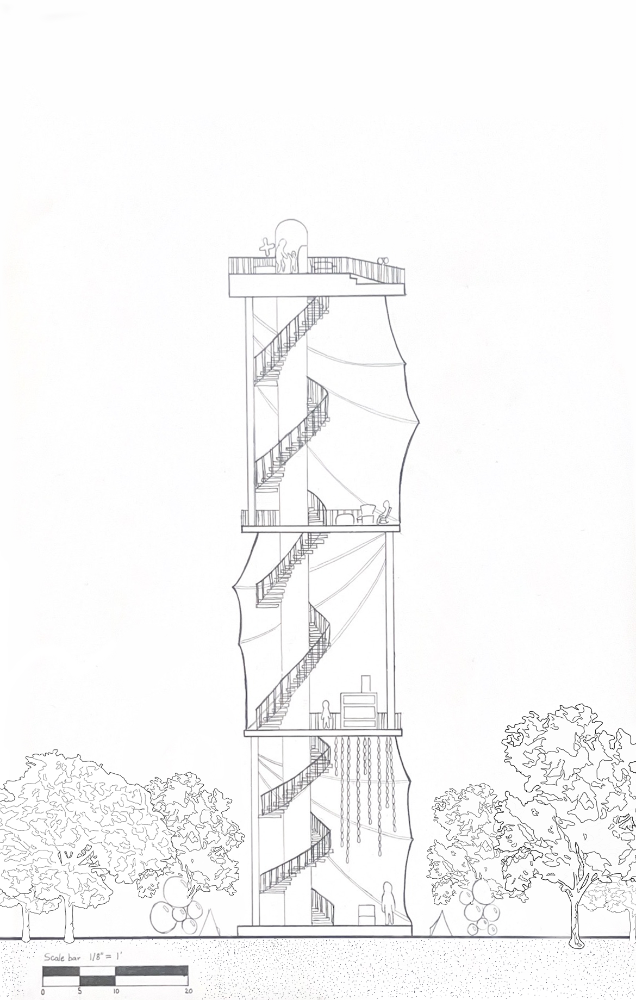
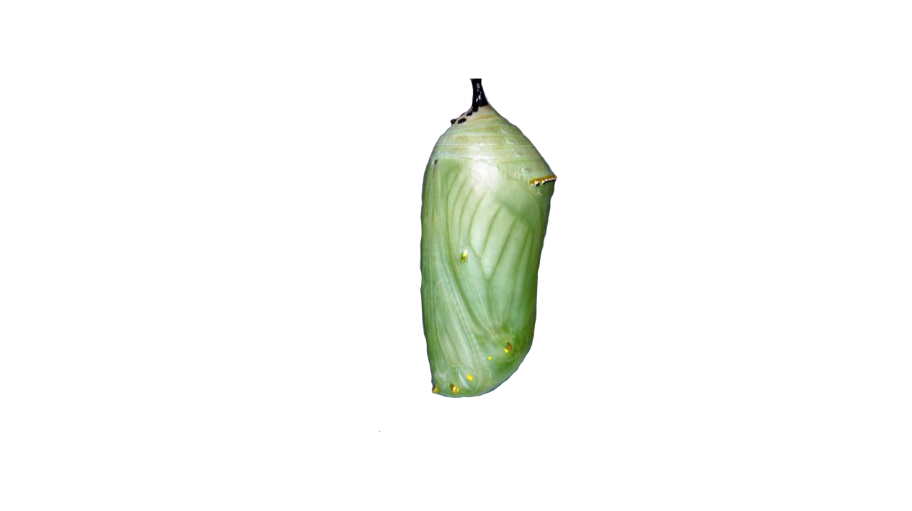
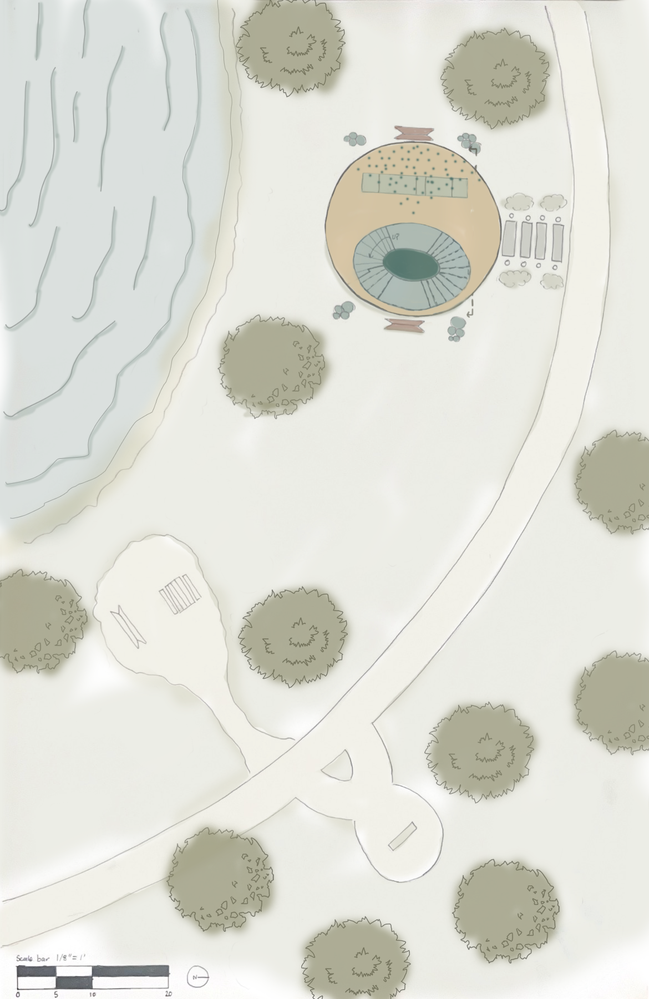
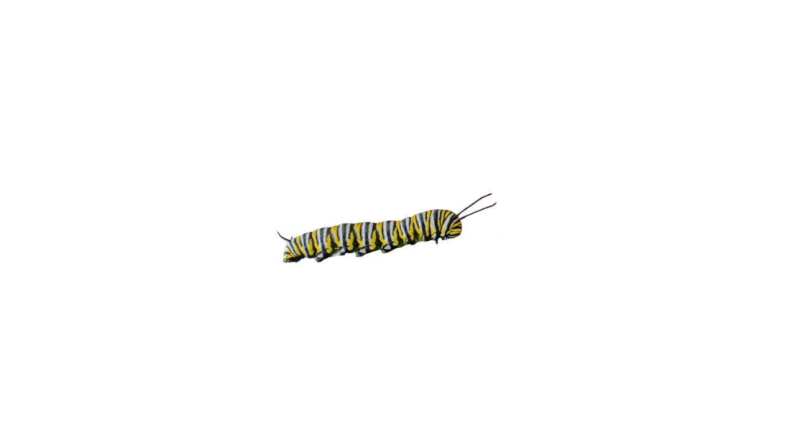
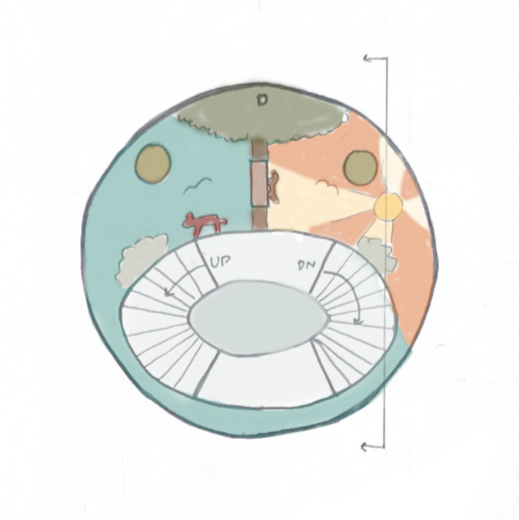
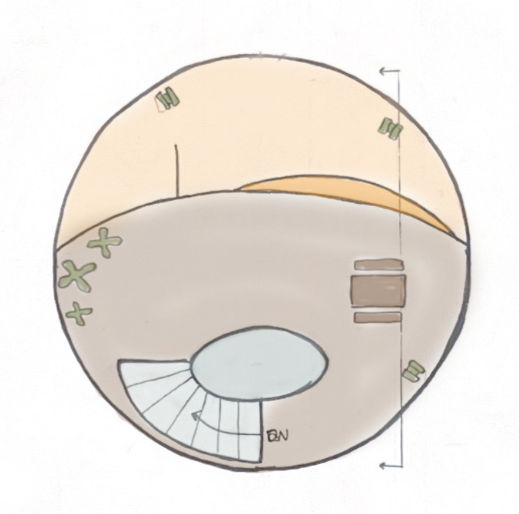
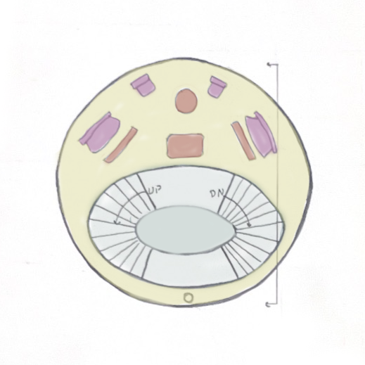
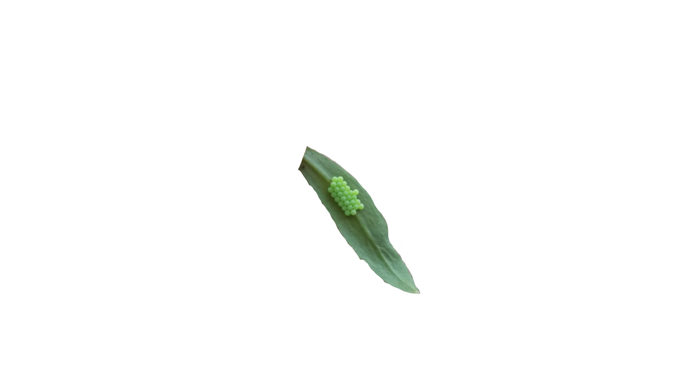
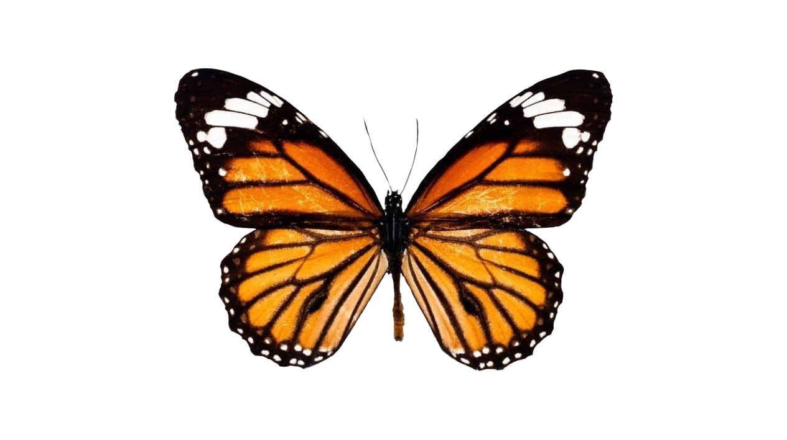

Observatory
The observatory project was assigned to freshmen to design a lookout tower over the surrounding arboretum on campus. The shape of my design was inspired by the form and life cycle of an insect from larvae to adult. The draped, cocoon shape of the building is meant to pull a viewer's attention to the middle, and often overlooked stage of transformation between adult and caterpillar. The building encompasses four floors, each following a stage of development in this insect's life cycle.
Axon
Section
Site Plan "Egg Floor"
Caterpillar Floor
Butterfly Floor
Chrysalis Floor




The site of this project was the University of Illinois Arboretum, which is a 35 acre plot consisting of a university-owned "Japan House" as well as a botanical garden. The space is free to public use for all. Within this drawing of the site, located off of "Dr. Frank W. Kari Walkway", the first floor of my observatory can be seen. This is the egg stage of the cycle. Conceptually, the egg is a quiet stage. This floor holds sculptures hanging from the ceiling, which a visitor can observe as they rest, possibly lying down on the flexible seating in and around the floor.


Traversing up stairs or an elevator, visitors reach the caterpillar floor, which emphasizes curiosity and exploration. A mural depicting common Illinois flora and fauna adorn the floor, encouraging users to look down as they journey higher. This is the play floor, interactive activities revolving around nature and discovery are included in aiding people to engage with their surroundings.

The final floor, the butterfly floor, is the highest of all. It is meant to be underwhelming. The floor is fit with binoculars of varying heights and a step/ramp allowing visitors to feel as though they are flying off of the tower (in a fun way) as they descend. This floor is underwhelming for the purpose of conceptually describing to visitors that they should be in no rush. The end shows as much beauty as the beginning had, the grandest part of reaching it was what you saw as you traveled up, because the end will only take you back down.

The chrysalis floor is the stage of transformation, where visitors can reflect and observe the changes occurring within and around them. It emphasizes stillness and introspection, providing a space that pushes visitors toward presence. The half-covered, half-open, design makes it easier to exist unbothered by harsh natural forces as meditation commences. Being the stage I modeled the exterior appearance after, it is meant to be visually striking and emblematic of the overall concept.


Project Details
Created by Hannah Kizilbash
Fall 2025
Drawn by hand + Adobe Photoshop
←